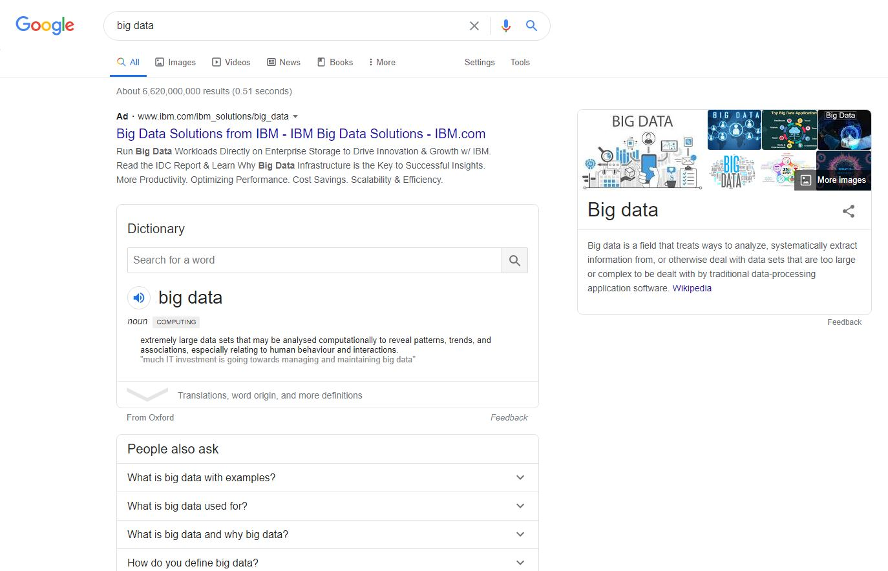
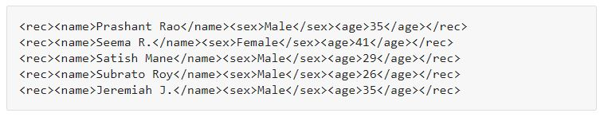

Any data that can be stored, accessed and processed in the form of fixed format is termed as a 'structured' data. Over the period of time, talent in computer science has achieved greater success in developing techniques for working with such kind of data and also deriving value out of it. However, nowadays, we are foreseeing issues when a size of such data grows to a huge extent, typical sizes are being in the rage of multiple zettabytes.
| Employee_ID | Employee_Name | Gender | Department |
|---|---|---|---|
| 2365 | ahmed | Male | Finance |
| 3398 | marwa | Female | Admin |
| 7465 | Ali | Male | Admin |
Any data with unknown form or the structure is classified as unstructured data. In addition to the size being huge, un-structured data poses multiple challenges in terms of its processing for deriving value out of it. A typical example of unstructured data is a heterogeneous data source containing a combination of simple text files, images, videos etc. Now day organizations have wealth of data available with them but unfortunately, they don't know how to derive value out of it since this data is in its raw form or unstructured format. The output returned by 'Google Search' is a good example for Unstructured data.
Semi-structured data can contain both the forms of data. We can see semi-structured data as a structured in form but it is actually not defined with e.g. a table definition in relational DBMS. Example of semi-structured data is a data represented in an XML file. Personal data stored in an XML file is Example Of Semi-structured Data
